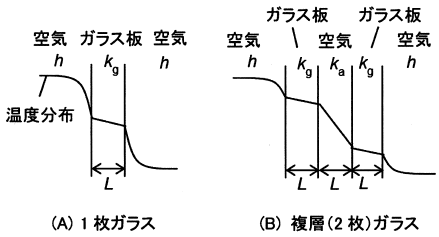

令和4年度 問34 化学プロセス
ガラス窓を介して室内－室外空気間に伝熱が生じている。窓が1枚ガラスの場合（図の（A））、両側の空気側伝熱係数h＝20 W/（m2・K）、ガラス板の厚さL＝0.005 m、ガラスの熱伝導度kg=1.0 W/（m・K）として、総括伝熱係数は次式によりU＝9.52 W/（m2・K）である。
$$ \frac{1}{U}=\frac{1}{h}+\frac{L}{k_{g}}+\frac{1}{h}=\frac{1}{20}+\frac{0.005}{1}+\frac{1}{20}=\frac{1}{9.52}$$
これに同じガラス板と厚さの空気層を加えた複層ガラス（図の（B））にすると、室内外空気間の伝熱量は何分の1となるか、最も近い値を選べ。空気の熱伝導度ka=0.026 W/（m・K）とする。

①
1/6
②
1/5
③
1/4
④
1/3
⑤
1/2
正答
④ 1/3
ガラス板および空気層を追加した条件での総括伝熱係数を求めます。
元々の値は1/U＝1/9.52です。そこに空気層0.005/0.026とガラス板0.005/1が足されます。0.005/0.026＝1.83/9.52、0.005/1＝0.0476/9.52であるため、1/U＝(1+1.83+0.0476)/9.52＝1/3.31です。よってU＝3.31です。
元々の総括伝熱係数は9.52でしたので、3.31/9.52＝0.35となり、最も近いのは1/3です。